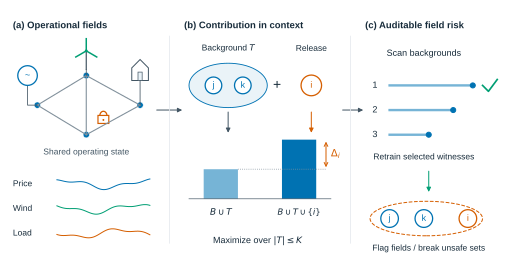
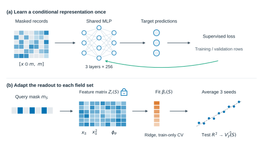
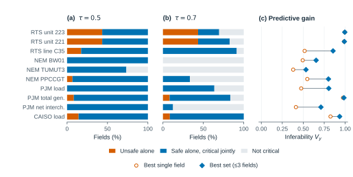
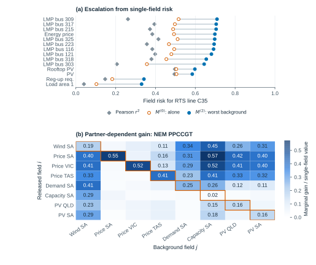
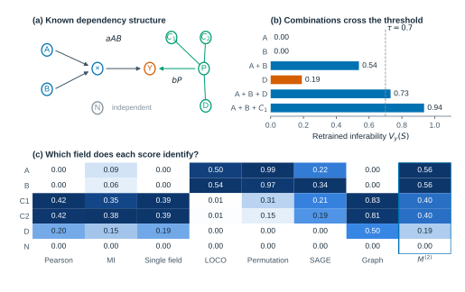
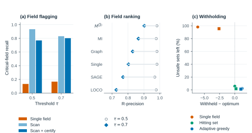
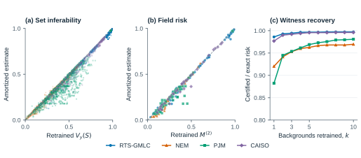
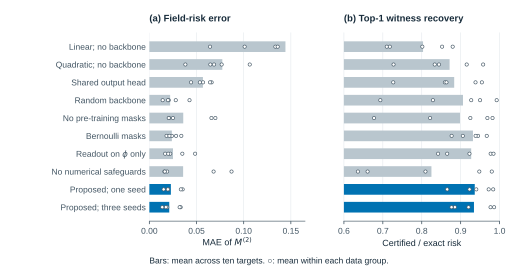
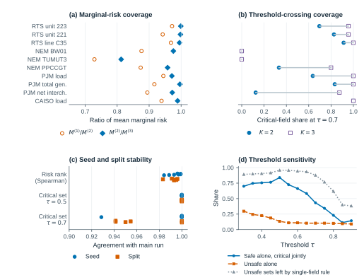

Codex V1 · 论文图形预览
基于 paper/claude/V4_en 的表达与展示优化。下方按正文图号排列；PDF 为论文插图，SVG 可继续编辑。示意图与实证图的具体来源见 FIGURE_SOURCES.md。
阅读完整论文版本说明
Fig. 1 · 从电力系统字段到组合风险审计

Fig. 2 · 共享表示与逐子集读出

Fig. 3 · 单字段评价漏掉的组合风险

Fig. 4 · 字段风险画像与增益矩阵

Fig. 5 · 协同、替代与上下文贡献

Fig. 6 · 字段判别、排名与扣留

Fig. 7 · 估计精度与见证恢复

Fig. 8 · 关键消融

Fig. 9 · 鲁棒性与背景预算
